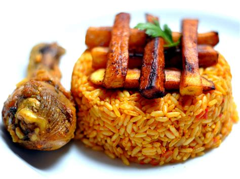

Jollof Rice

Description
Jollof rice is a popular West African rice, chicken and plantain dish.
Ingredients
- 1 tablespoon sunflower oil
- 1 large onion, sliced
- 2 (14.5 ounce) cans stewed tomatoes
- ½ (6 ounce) can tomato paste
- 1 tea spoon salt
- ¼ teaspoon black pepper
- ¼ teaspoon cayenne pepper
- ½ teaspoon red pepper flakes
- 1 tablespoon worcestershire sauce
- 1 tablespoon chopped fresh rosemary
- 2 cups water
- 1 (3 pound) whole chicken, cut into 8 pieces
- 1 cup uncooked white rice
- 1 cup diced carrots
- ½ pound fresh green beans, trimmed and snapped into 1 to 2 inch pieces
- ¼ teaspoon ground nutmeg
- 4 ripe plantains, peeled and cut diagonally into ½-inch slices
- ½ cup of sunflower oil for frying
Recipe Direction
- Place chicken drumsticks in a large Dutch oven over medium heat.
Add ½ onion, ginger, crushed bouillon cubes, garlic, curry powder, 1 teaspoon herbes de Provence, black pepper, and cayenne pepper.
Mix well.
Cook until chicken starts sticking to the bottom, about 5 minutes.
Pour in water, mix, cover the pot, and bring to a gentle simmer; cook for 15 minutes and remove from heat.
- Transfer chicken to a baking dish using a slotted spoon.
Strain cooking liquid through a fine-mesh sieve.
Reserve 1 ½cups liquid.
Discard solids.
- Preheat oven to 400 degrees F (200 degrees C).
- Bake chicken in the preheated oven until no longer pink in the middle and the juices run clear, about 30 minutes.
An instant-read thermometer inserted into the thickest part should read 165 degrees F (74 degrees C).
- Heat 3 tablespoons sunflower oil in a large pot over medium-low heat and cook ½ onion until soft and translucent but not browned, about 5 minutes.
Add tomato sauce; cook and stir until slightly thickened and infused into the oil, 5 to 7 minutes.
- Stir reserved chicken broth, water, 1 teaspoon herbes de Provence, salt, and pepper into the pot.
Bring to a simmer; add rice. Cook, stirring often, until rice is almost tender, 15 to 20 minutes.
Add frozen vegetables and continue cooking until rice is tender and creamy, about 5 minutes.
- Heat ½ cup of canola oil in a nonstick pan over medium heat.
Add plantains and fry on both sides until golden and crispy, about 2 to 3 minutes per side.
Drain on paper towels. Garnish jollof rice with friend plantains and serve with chicken.
Home page
Return to top page